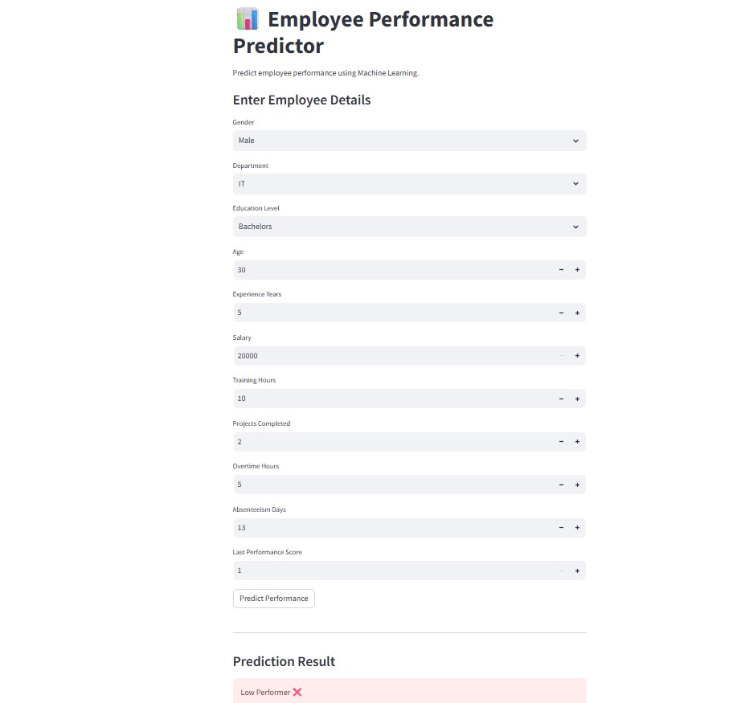
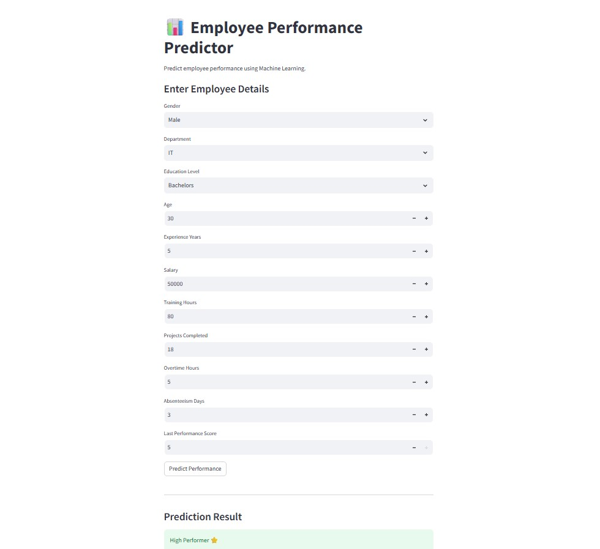
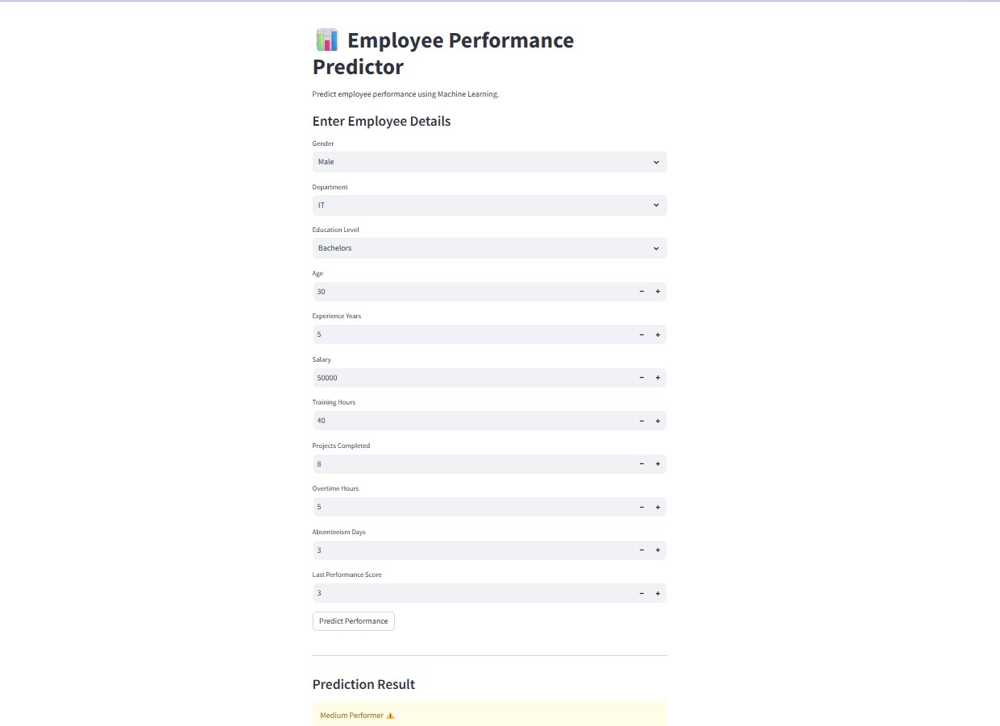
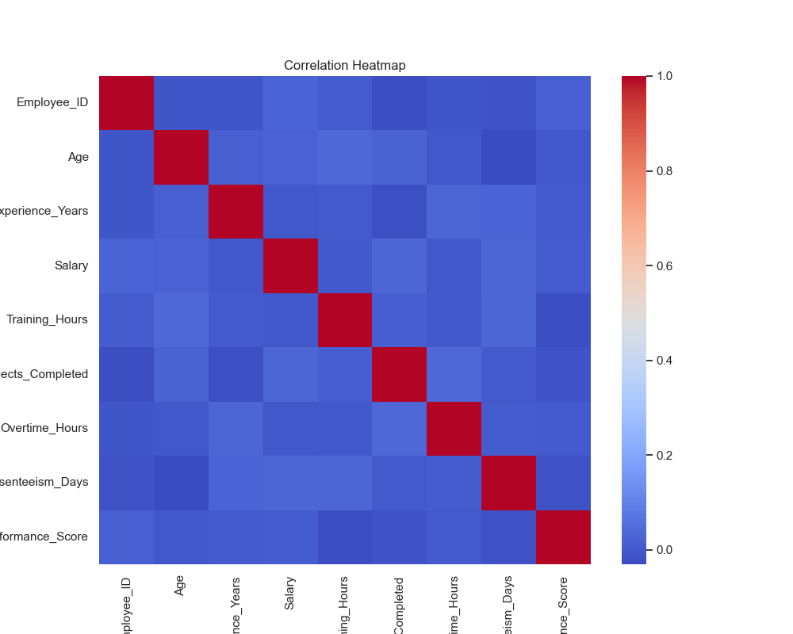
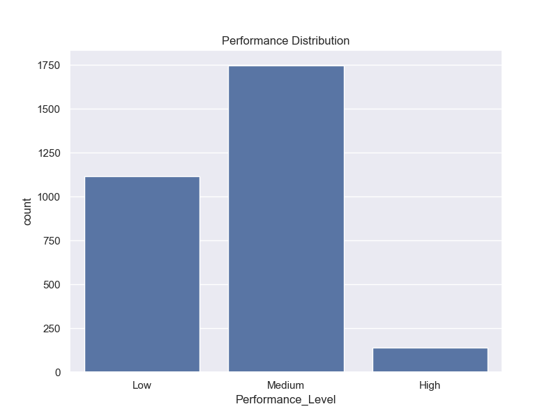
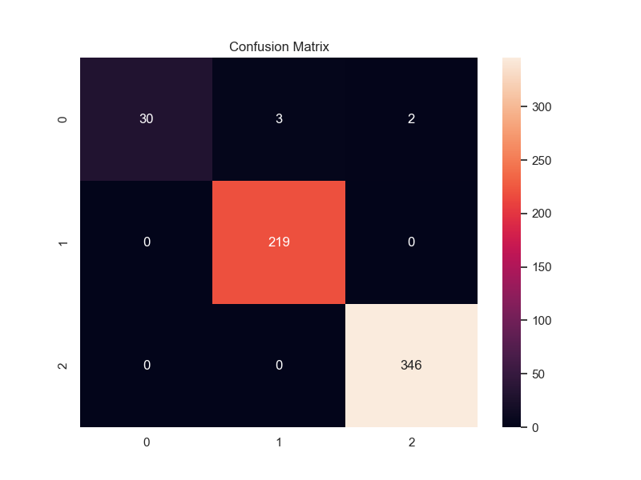

● Developed an end-to-end Employee Performance Prediction system using Machine Learning and HR Analytics concepts.
● Built a predictive model to classify employees into High, Medium, and Low performance categories using structured employee data.
● Performed Exploratory Data Analysis (EDA) to identify trends between employee training, projects, and absenteeism.
● Designed an interactive Streamlit dashboard enabling HR teams to predict employee performance in real time.
📊 Key Features:
● Employee Performance Prediction (High / Medium / Low)
● Training Impact Analysis
● Absenteeism Pattern Analysis
● Project Completion Insights
● Feature Importance Visualization
● Interactive Streamlit Dashboard
Technologies: Python, Pandas, NumPy, Scikit-learn, Matplotlib, Seaborn, Streamlit
CSV File Structure:
Employee_ID,Age,Gender,Department,Education_Level,Experience_Years,Salary,Training_Hours,Projects_Completed,Overtime_Hours, Absenteeism_Days,Last_Performance_Score,Performance_Level 1,50,Male,Finance,Masters,22,26928,26,19,9,2,1,Low 2,36,Male,IT,Bachelors,12,75309,7,18,41,0,4,Medium 3,29,Male,Sales,Masters,28,191960,72,17,21,7,5,Medium 4,42,Male,IT,Masters,25,194904,27,19,38,18,2,Low 5,40,Male,HR,Masters,13,136196,78,7,21,12,5,Medium 6,44,Female,Marketing,PhD,6,29404,65,0,36,6,5,Medium 7,32,Female,Marketing,PhD,28,184711,70,14,38,12,3,Medium
Project Files: Employee Performance
Output:





